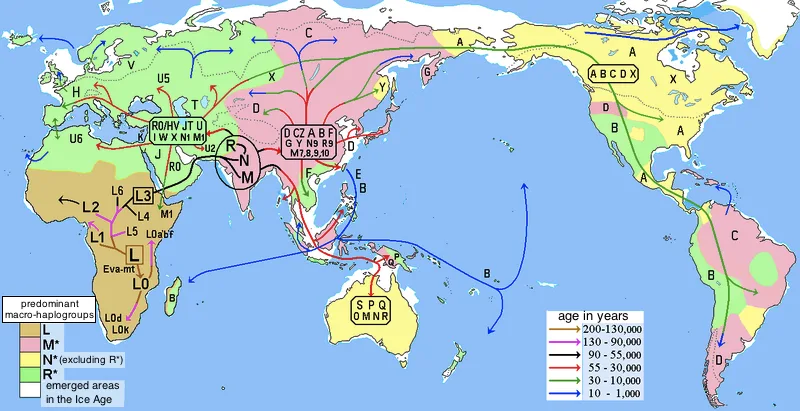
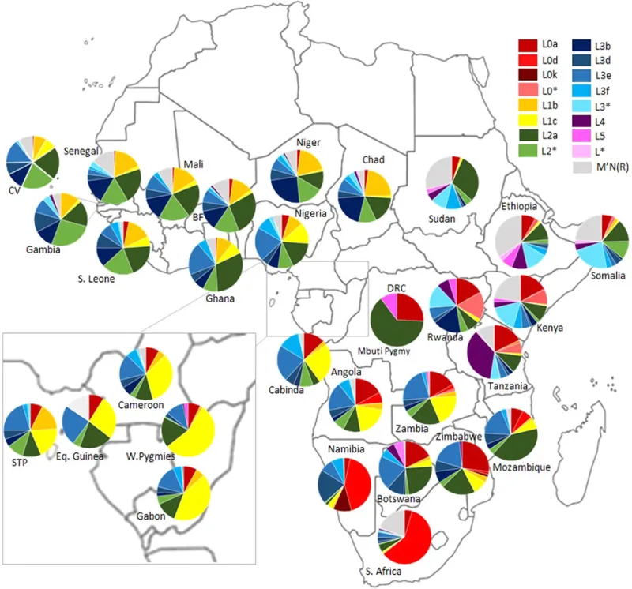

The text settles it — but concede the grievance first, or nothing will be heard.
The claim is about descent, so genetics can speak to it. But the history involved is real atrocity, and the science has real limits.
Triumph here will cost you the conversation and deserve to.
A 2015 study by Bryc and others looked at 5,269 African Americans. On average their ancestry was about 73% African, 24% European, and under 1% Native American.
No trace from the Levant showed up.
Two replies, and the first is better than critics admit. A DNA test compares you to people living now.
Suppose a family line left the Levant for West Africa 2,500 years ago and married in. Today that line would simply read as West African.
The signal would be gone, not missing.
It is a real argument and an untestable one in the same breath. It explains why no evidence will be found, which means no result could ever count against it.
That is its weakness, not its strength.
This one has a clear answer at the population level, with the limits stated rather than buried.
"Even if every genetic claim were granted, would it change how a person is saved?"


Israel was never a blood category. An absorbed line would now read as West African.
The camps make two replies, and the first is stronger than critics admit. A DNA test is calibrated against people living now. Say a family line left the Levant for West Africa 2,500 years ago and married in. Today that line would simply read as West African. West Africans are the yardstick. The test cannot see what has been fully absorbed into its own baseline.
Their second reply is theological. Israel was never a blood category. A mixed multitude left Egypt with Israel (Exodus 12:38). Ruth the Moabite enters the messianic line. Rahab the Canaanite stands in Matthew's genealogy. God made Israel by covenant and calling, not by blood. Handing the question to a laboratory concedes a premise Scripture never granted.
The science answers it. But handle gently — the history here is real atrocity.
Answered at the population level, with the limits stated rather than buried.
The absorbed-lineage argument is real, and untestable in the same breath. That is its weakness. It explains why no evidence would be found, so it predicts nothing. It also concedes that the case is not supported, only undisproven. That is far weaker than the certainty preached on the street.
The covenant argument is more interesting, and it is correct. Which is exactly why it is fatal to them. Ruth, Rahab and the mixed multitude show Israel taking in outsiders by covenant. If covenant makes Israel rather than blood, the New Testament's answer to the identity question stands. The charts and the haplogroups are then beside the point.